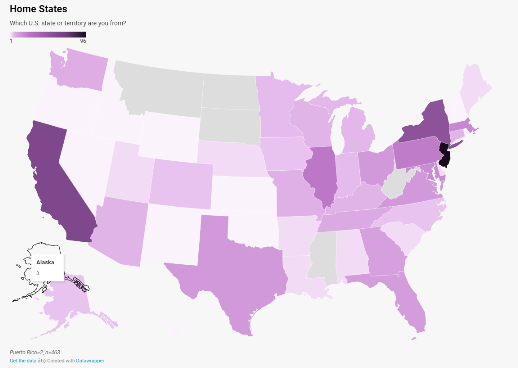

Geography
Domestic survey respondents hailed from 45 states, Puerto Rico, and the District of Columbia, while international students represented 28 countries across five continents. Americans constituted 90 percent of the respondents and a plurality, nearly 21 percent, called New Jersey home. Similar to the nation at large, the majority of students — 64 percent — live in the suburbs. The United Kingdom was the most represented international location, with nearly 15 percent of international students identifying as Brits.